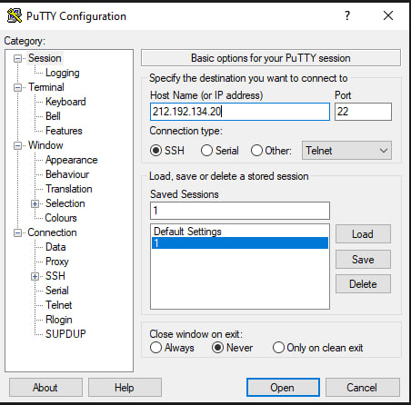
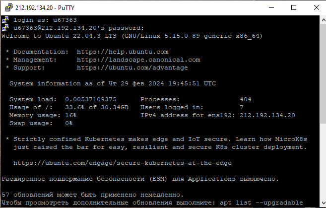
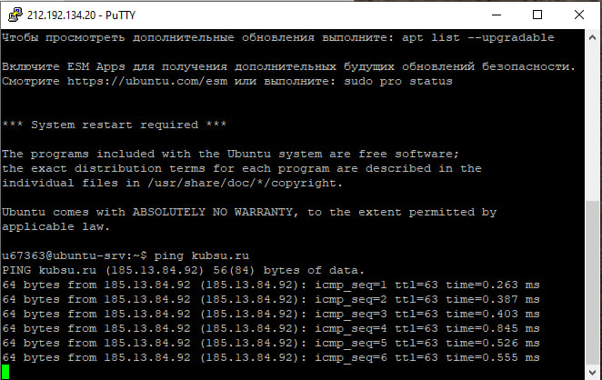
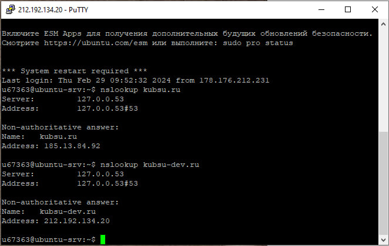
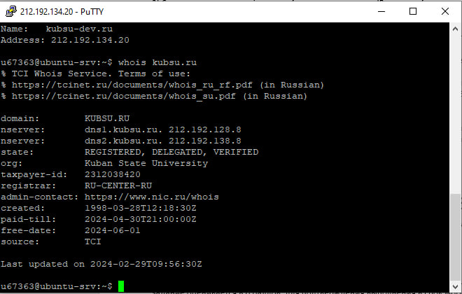
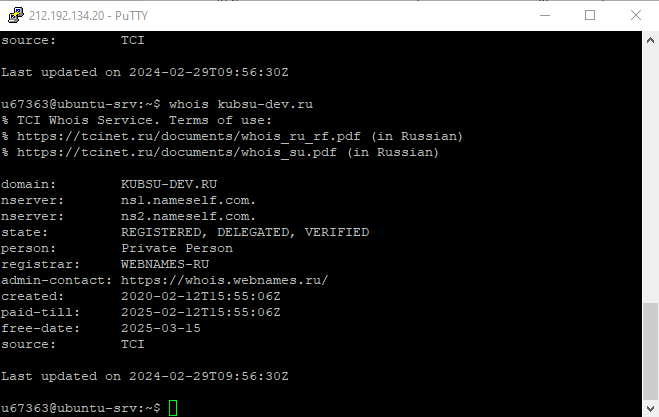
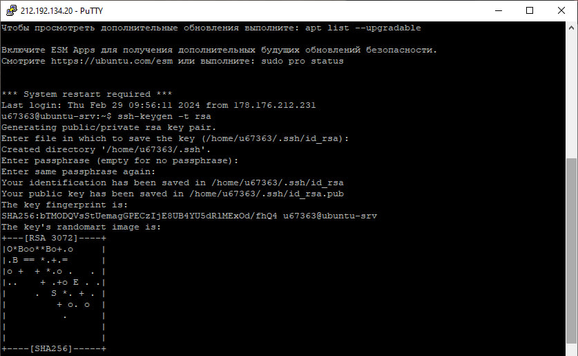
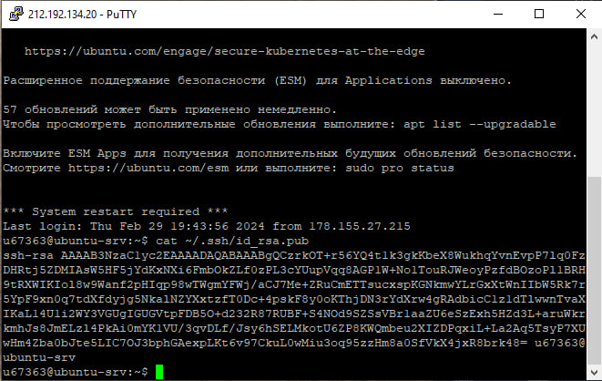
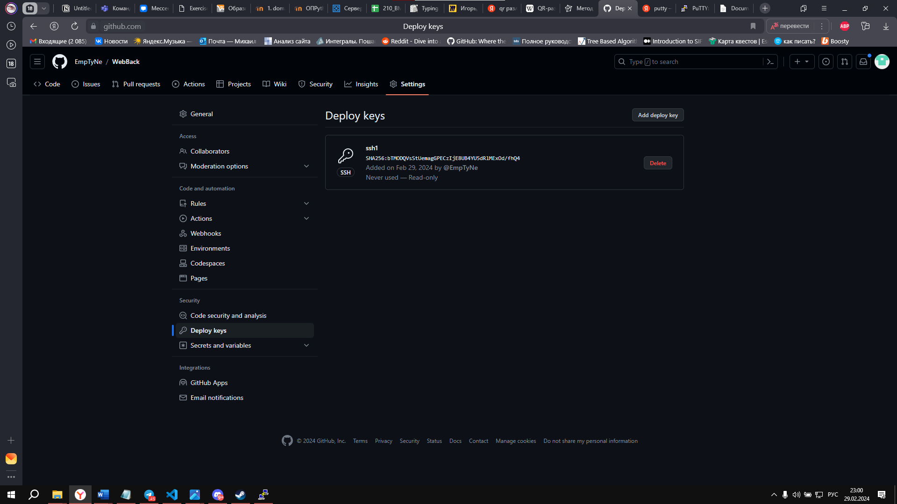

1. Подключимся к нашему серверу с помощью программы PuTTY через ssh ключ
 2. Введем команду ping kubsu.ru и получим IP-адресс kubsu.ru
3. Введем команду nslookup kubsu.ru и nslookup kubsu-dev.ru
4. Введем в команду whois kubsu.ru и whois kubsu-dev.ru
 5.Создаем и получаем ssh ключ
 6. подключаем наш ssh ключ к репозиторию github
